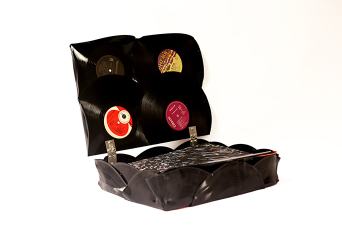
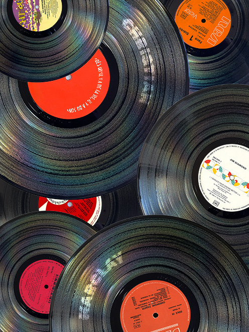
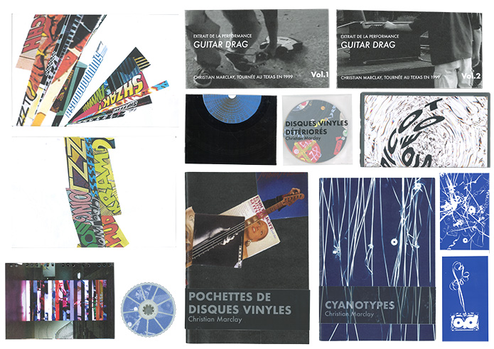

Coffret d'artiste : Christian Marclay
Christian Marclay est un artiste plasticien contemporain. J'ai réalisé un coffret d'artiste pour réinterpréter ses procédés de création et représenter l'artiste dans sa globalité. C'est un plasticien qui créer des liens entre le son et l'image. C'est un précurseur du turntablism. Il collectionne tout objet qui produit un son comme les disques vinyles, des instruments,etc. Il réalise également des collecte en photographiant ces objets sonores comme des sonettes d'immeubles que l'on croisent tous dans la rue. Dans ce coffret vous pourrez y trouvers plusieurs éditions qui présentent son travail sous forme de série mais aussi des objets plus expérimentaux qui évoquent les pratiques de l'artiste.



